1、Flexray通信周期与时间分层
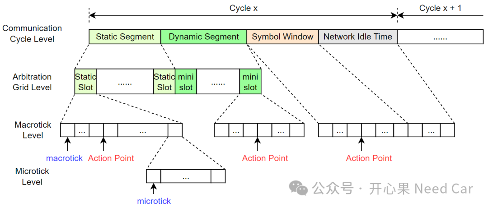
如上图，按照协议(1)规定，Flexray的一个通信周期可以包含四个部分：静态段（Static Segment）、动态段（Dynamic Segment）、符号窗（Symbol Window）、网络空闲时间段（NIT，Network Idle Time）。
静态段由多个静态时间片（Static Slot）构成，在一个Cycle中，必须包含静态段，所有Static Slot包含的macrotick相同；
动态段由多个微时间片（Mini Slot）构成，在一个Cycle中，动态段可选，即：可以不配置动态段（minislot = 0）。动态段中，所有的mini slot包含的macrotick相同。动态段采用FTDMA（Flexible Time Division Multiple Access，柔性分时多路访问）策略通信，基于事件（Event Trigger）触发数据发送；
符号窗可选，由一定数量的macrotick构成，如果不用符号窗，可以将该段的长度设置为0个macrotick；
一个通信周期，必须包含网络空闲时间段，NIT的长度 = 一个循环的总长度 - 静态段长度 - 动态段长度（如果有）- 符号窗长度（如果有）。
不管是哪个Segment，均由宏时钟（macrotick）构成，macrotick是表示全局时间的最小粒度单位。每个通信循环由固定数量的macrotick构成，eg：one cycle = 5000 macrotick。其中，宏时钟又由多个微时钟（microtick）构成。微时钟直接从晶振产生，也就是时钟系统经过倍频和分频后的结果。微时钟不受时钟同步机制的影响，是一个结点里面的最小时间单位。
microtick对应的时间长度是多少呢？microtick既然由时钟产生，我们就的知道Flexray模块获取的时钟是多少，eg：80MHz。那么就意味着一个tick = 1/80000000 = 0.0125us，如果需要经过2次采样（sample）得到一个microtick，也就是意味着一个microtick = 0.025us。规范(1)描述如下：
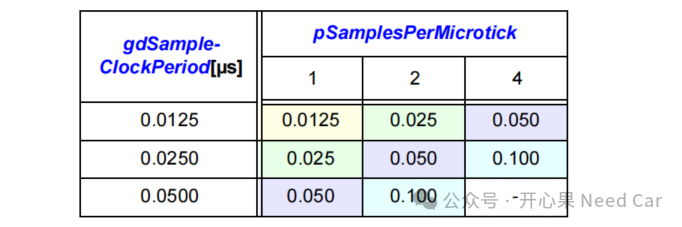
当microtick知道以后，即可推算macrotick。一般，macrotick长度可以设置在1us-6us，工程上，常常设置macrotick = 1us。如果设置macrotick = 1us，且一个microtick = 0.025us，参考规范(1)可知：一个macrotick = 40 microtick，如下所示：
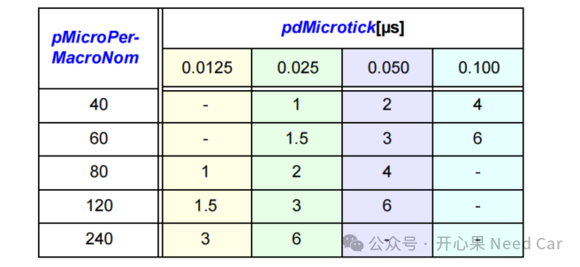
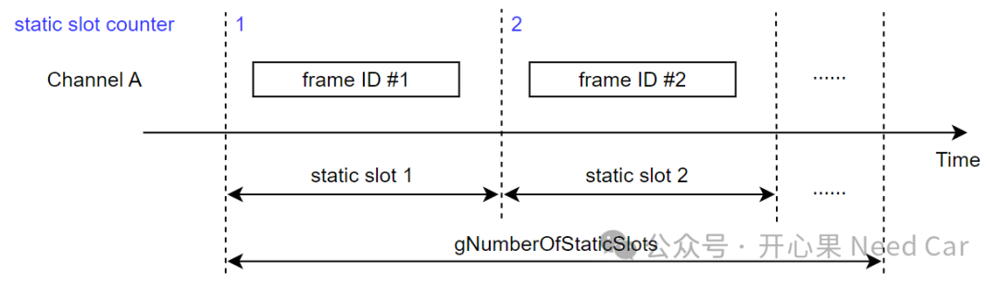
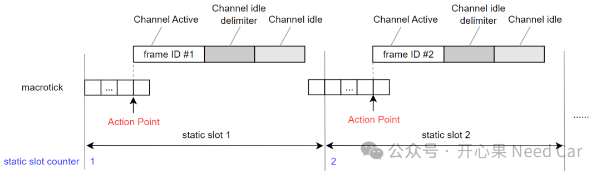
工程上，Channel idle由参数gdDynamicSlotIdlePhase表示，eg：gdDynamicSlotIdlePhase = 0 minislot（不用该长度）。
每个Static Slot包含一个动作偏移点（Action Point），对于Flexray网段，Action Point偏移值固定，eg：gdActionPointOffset = 9 MT。gdActionPointOffset 同样适用NIT中的动作偏移，示意如下：
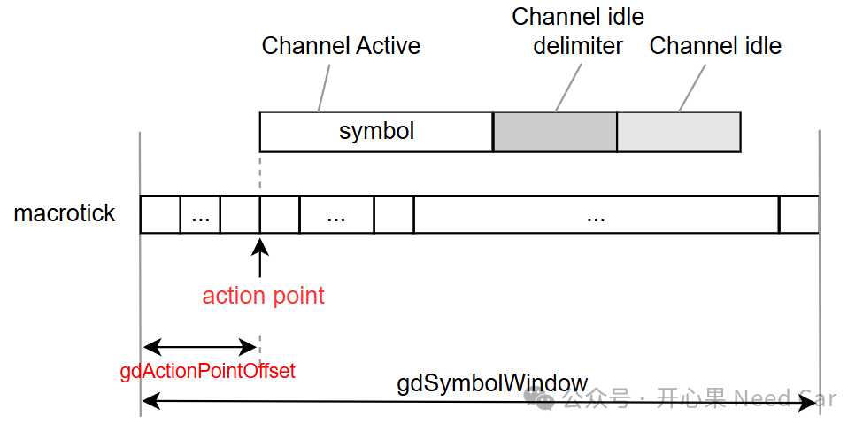
提示：MT是macrotick简称。
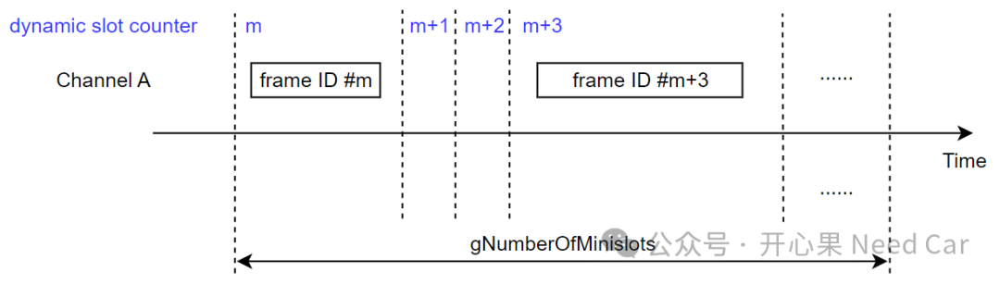
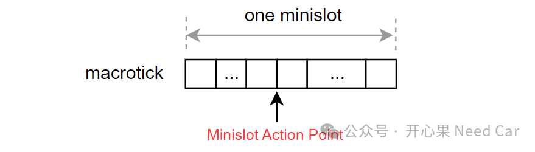
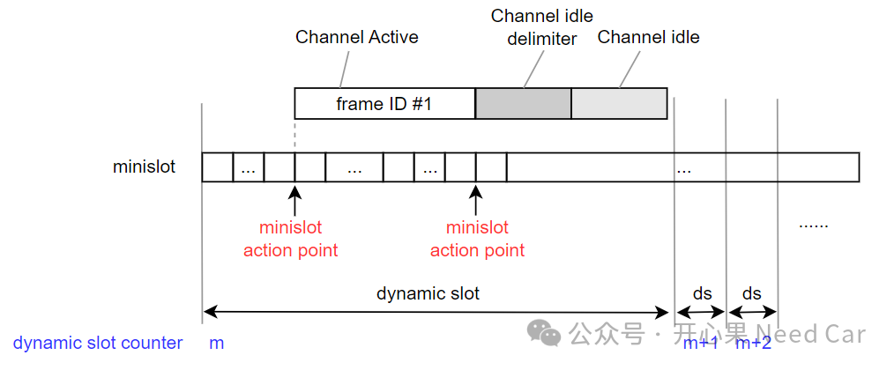
2、Frame编码
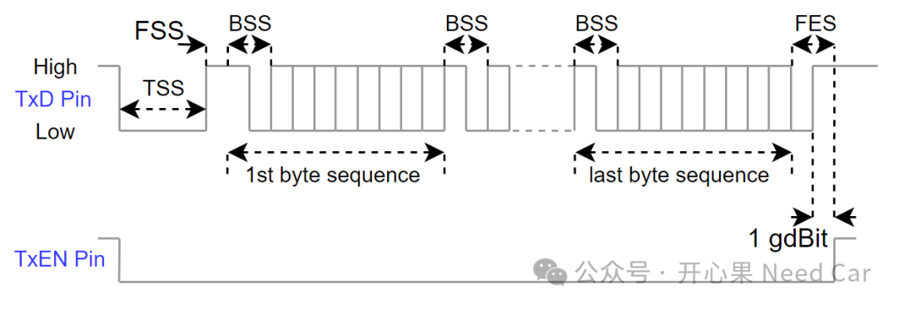
TSS：Transmission start sequence，当发送节点需要发送数据时，在所属的slot中，首先发送TSS，TSS由多个连续的低电平组成，eg：gdTSSTransmitter = 9 gdBit = 9 * 0.1us = 0.9us。
FSS：Frame start sequence，由一个高电平组成。
BSS：Byte start sequence，由一个高电平+一个低电平组成，后跟一个byte数据。
FES：Frame end sequence，由一个低电平+一个高电平组成，表征数据传输结束。
提示：如果使用10MHz通信速率，1gdBit = 1/10000000 = 0.1us。
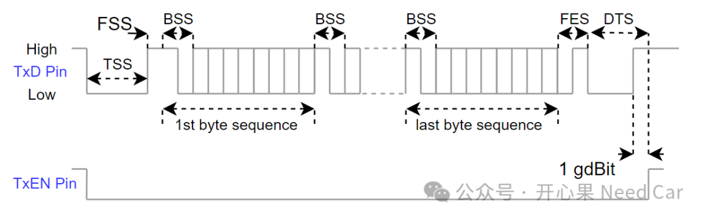
相对于静态Frame，动态Frame多了一个DTS（dynamic trailing sequence）表征数据的结束。

参考资料
SIMPLE TITLE
(1)FlexRay Communications SystemProtocol Specification Version 2.1.pdf
往期精彩回顾